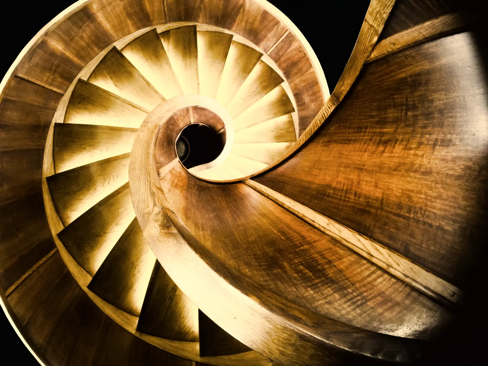
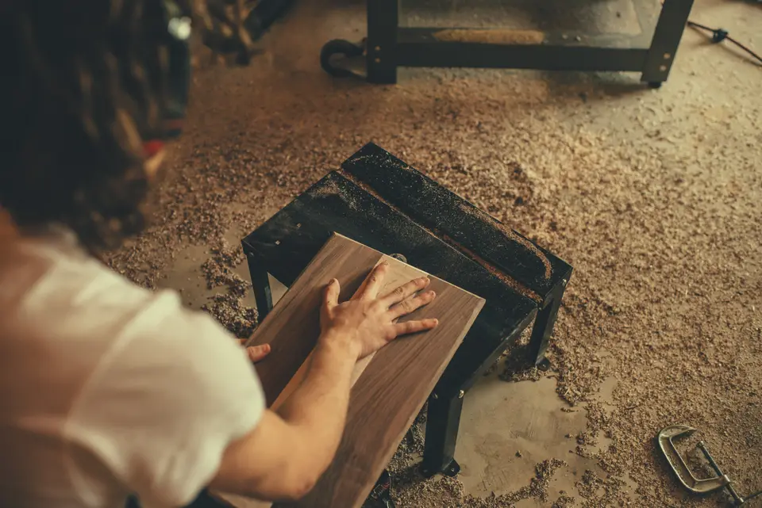
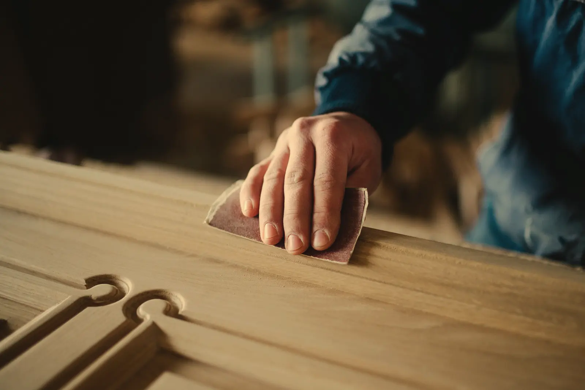
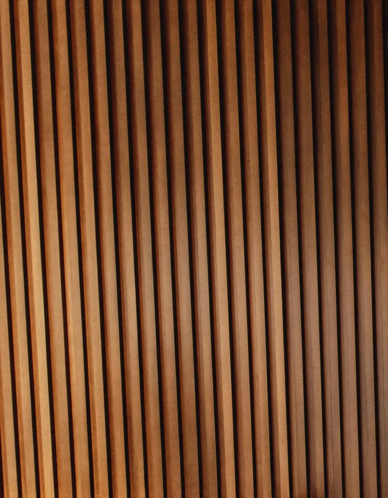

Menuisier à Rennes Fait pour rester
Escaliers, dressings et bibliothèques en bois massif, que je dessine, fabrique et pose.
Du premier relevé à la dernière marche posée, je ne passe la main à personne.

- de garantie décennale sur chaque ouvrage posé
- 10ans
- d’atelier à Rennes, où chaque pièce est fabriquée
- 180m²
- délai type d’un escalier, du relevé à la pose
- 8semaines
Ce que je fabrique
De la menuiserie intérieure seulement : je dessine chaque ouvrage, je le fabrique à l’atelier et je le pose moi-même.
Escaliers sur mesure
Droits, quart tournant ou hélicoïdaux, en chêne, frêne ou hêtre : marches de 40 mm, garde-corps assorti, cotes prises dans votre trémie.
Dressings et placards
Penderies sous combles, placards sous escalier, séparations de pièces : dessinés au centimètre pour la pièce où ils vont.
Bibliothèques et meubles
Ensembles muraux en chêne massif ou en contreplaqué de bouleau, avec un éclairage glissé sous les tablettes si vous le voulez.
Parquets massifs
Chêne à l’anglaise, à bâtons rompus ou en point de Hongrie, collé ou cloué, puis poncé et huilé ou vitrifié en phase aqueuse.
Cuisines et plans de travail
Façades et plans de travail en chêne ou en noyer de 40 mm, huilés, avec les chants autour de l’évier traités contre l’eau.
Portes et verrières intérieures
Portes à fleur de cloison, verrières en chêne, moulures refaites au profil d’origine dans une maison ancienne.



Dans l’atelier
Je trace, débite, assemble et ponce chaque pièce ici, à Rennes, avant de la poser chez vous.
Ponçage à la main d’une pièce chantournée
Pièces livrées
Quelques ouvrages sortis de l’atelier, du relevé à la pose.


Photographies : Petar Milošević (CC BY-SA 4.0, adaptation sous la même licence), Shixart1985 (CC BY 2.0), Bertrand from Paris, France (CC BY 2.0), Crew (CC0), Ian Schneider (CC0) — toutes modifiées pour ce site (étalonnées, parfois recadrées) et redimensionnées pour le web. Sources, licences et modifications
Autour de Rennes
L’atelier est à Rennes. Je viens voir la pièce chez vous, dans ces quatre communes.
En quatre temps
Du premier appel à la pose, quatre rendez-vous, toujours avec moi.
Prise de contact
Vous décrivez la pièce, l’usage et le bois qui vous plaît, par téléphone ou avec le formulaire en bas de page.
Visite technique
Je relève les cotes chez vous et je vérifie les aplombs, l’humidité des murs et les accès.
Plan et devis
Vous recevez le plan coté, le choix des essences et des ferrures, et un devis ligne par ligne.
Fabrication et pose
Je fabrique les pièces à l’atelier, puis je les pose chez vous à la date fixée ensemble.
Vos questions

Ce qu’on me demande le plus souvent avant un premier rendez-vous.
Quelles essences de bois privilégier pour un agencement ?
Pour des marches ou une pièce de passage, le chêne ou le frêne, qui sont durs. Pour un meuble léger ou l’intérieur d’un placard, un résineux ou un panneau latté suffit.
Pourquoi une prise de cotes sur place est-elle indispensable ?
Aucun mur n’est droit. La visite montre les faux aplombs, les plinthes et les gaines avant qu’une seule pièce soit fabriquée.
Quel entretien pour des ouvrages en bois massif ?
Une finition huilée ou un vernis hydrofuge protège le bois des taches. Ensuite, un chiffon sec et une cire naturelle de temps en temps.
Comment se passe le devis ?
Je viens voir la pièce et relever les cotes. Vous recevez ensuite le plan coté, le choix des essences et un devis détaillé ligne par ligne, que vous relisez à votre rythme.
Parlons de votre projet
Décrivez la pièce et l’usage : je vous rappelle pour fixer une visite.
Demande reçue.
Démonstration : aucune donnée n’a été envoyée.
Je vous rappelle sous deux jours ouvrés pour fixer une visite.
- Projet
- À préciser à la visite
- Commune
- Rennes
- Quand
- Dans les trois mois
La suite
- Visite technique
Je relève les cotes chez vous et je vérifie les aplombs, l’humidité des murs et les accès.
- Plan et devis
Vous recevez le plan coté, le choix des essences et des ferrures, et un devis ligne par ligne.
- Fabrication et pose
Je fabrique les pièces à l’atelier, puis je les pose chez vous à la date fixée ensemble.
Ou par téléphone : 02 61 91 38 47